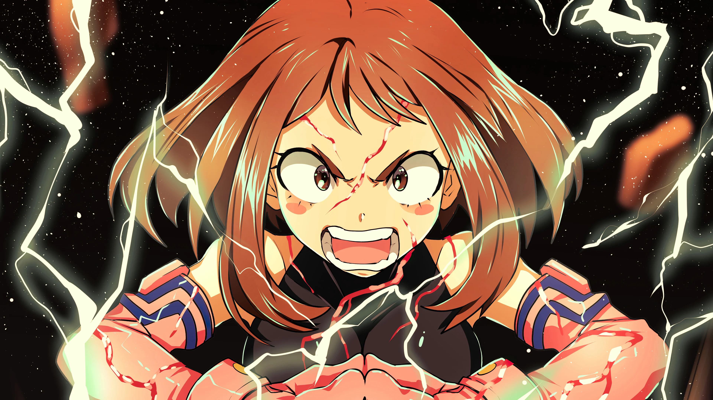

My Hero Academia (僕のヒーローアカデミア Boku no Hīrō Akademia?) es un manga escrito e ilustrado por Kōhei Horikoshi. Se basa en un one-shot realizado por el mismo autor y publicado en el quinto volumen del manga Ōmagadoki Dōbutsuen bajo el nombre de My Hero.23 El 11 de enero de 2015, fue lanzado un VOMIC basado en el manga.
Ha originado varios mangas derivados.5 Una adaptación del manga original al anime comenzó a transmitirse el 3 de abril de 2016.6 Unas historias extra han sido adaptadas por Anri Takahashi en formato de novela ligera.7 Además, se han desarrollado dos videojuegos por las empresas Bandai Namco Games y Takara Tomy.8 En la encuesta realizada por la cadena de televisión Japonesa TV Asahi para elegir los 100 Mejores mangas de la historia, My Hero Academia alcanzó el puesto número 16.

Argumento
La historia tiene lugar en un mundo donde el 80% de la población ha desarrollado «singularidades», surgiendo así héroes y villanos. Entre el 20% de personas sin dones, se encuentra Izuku Midoriya, cuyo mayor deseo es poder estudiar en la UA (siglas de Yûei, una escuela de héroes) y convertirse en un héroe como su ídolo All Might.3 Un día, tras conocer personalmente a All Might, este le ofrece heredar sus poderes al ver su gran determinación a pesar de haber nacido sin don. Izuku accede y empieza a estudiar en la UA, donde hace nuevos amigos, conoce otros héroes profesionales, aprende a dominar sus poderes y se enfrenta a auténticos villanos.
Personajes
Izuku Midoriya (緑みどり谷や出いず久く Midoriya Izuku?) También conocido como Deku (デク Deku?), es el protagonista de la historia y rival de Katsuki Bakugo, quien se ha burlado de él constantemente por sus aspiraciones de ser un héroe, pero quien al enfrentarséle durante la batalla de prueba, gradualmente se transformó en una persona más segura y valiente, hasta el punto de desarrollar algunas habilidades de liderazgo. Nunca manifestó un don, motivo por el que fue acosado en la infancia y ser retratado como alguien inseguro, sin embargo, eso no le impidió tener el sueño de ser un héroe. Es un gran fanático de All Might, el héroe número uno y símbolo de la paz para el mundo. Un encuentro con él le lleva a una de las grandes aventuras de su vida y la trama principal del anime: la historia de cómo Deku se convierte en héroe más grande de todos. Es un chico muy servicial y educado, pero que a veces es muy tímido y reacciona exageradamente en determinadas situaciones. Al ser un fan de los héroes, Izuku tiene el hábito de anotar todos y cada uno de los aspectos de los diferentes héroes que va conociendo a lo largo de la historia, desarrollando buenas habilidades analíticas y de observación a través de interminables murmullos, algo que molesta o asusta a sus compañeros.
Katsuki Bakugo (爆ばく豪ごう勝かつ己き Bakugō Katsuki?), también conocido como maestro de las Explosiones Asesinas Dynamight (大爆殺品 Daibakusatsushin Dainamaito?), o simplemente Dynamight, conoce a Deku desde que eran muy pequeños, pero cuando cumplieron 4 años Bakugo dejó de ser amigo de Deku al ver que él no tenía quirk. Es por eso que Deku es su principal rival, aunque con el tiempo su relación va mejorando hasta tener una amistad basada en la rivalidad. Se comporta como una persona soberbia, ya que de pequeño fue tratado como si fuera superior a otras personas. Posee la habilidad de provocar explosiones con la nitroglicerina que segregan sus glándulas sudoríparas, principalmente las de sus manos.
Shoto Todoroki (轟とどろき焦しょう凍と Todoroki Shoto?) o conocido por Bakugo como Mitad y Mitad, Shoto Todoroki es un chico frío y callado debido a los traumas de su infancia. Es el hijo del actual héroe número uno, Endeavor, al que desprecia. Tiene el poder del hielo en su lado derecho, heredado de su madre, y del fuego en el izquierdo, heredado de su padre. Además, tiene una quemadura en el lado izquierdo de su cara que le hizo su madre al lanzarle agua hirviendo, por la relación de esa parte de su cuerpo con el maltrato de su marido. Por esa razón, Todoroki juró no usar el poder de fuego, demostrando su rechazo hacia su padre. A pesar de eso, gracias a su compañero Midoriya, empieza a usarlo de nuevo.
Ochaco Uraraka (麗うらら日かお茶ちゃ子こ Uraraka Ochako?), también como Uravity (ウラビティ Urabiti?) por su nombre de heroína, todo lo que toca lo hace flotar y puede hacer que la gravedad no afecte a la persona que toca. Proviene de una familia pobre que es propietaria de una empresa de construcción, la cual se encuentra con problemas económicos. Ochako entró en la U.A. con el objetivo de convertirse en heroína, y así ganar dinero con el que poder dar a sus padres una vida acomodada y libre de preocupaciones. Fue la primera conocida cercana que hizo Izuku en la academia desde que la salvó de un robot gigante durante el examen de admisión y actualmente es su mejor amiga, aunque ella está enamorada de él. Es una persona muy cálida, animada y juguetona que piensa en todo positivamente, se sorprende fácilmente por cosas pequeñas y pierde los nervios con facilidad, aunque es lo suficientemente objetiva como para ver defectos y virtudes, y determinada e intimidante cuando la situación así lo requiere.
Toshinori Yagi (八や木ぎ俊とし典のり Yagi Toshinori?), más conocido como All Might (オールマイト Ōru Maito?), es el antiguo héroe número uno y «Símbolo de la Paz», portador del don del One For All hasta encontrar a un digno sucesor. Fue gravemente herido por uno de los villanos principales, All For One, y le es difícil desde ese momento mantener su forma musculosa, forzándolo a reducir su trabajo de héroe a tres horas al día. En busca de un sucesor, conoce a Izuku Midoriya, a quien, después de ver sus buenas cualidades para ser héroe, propone ser el próximo portador del One for All.
Shota Aizawa (相あい澤ざわ消しょう太た Shota Aizawa?)Shota también conocido como Eraser Head (イレイザー・ヘッド Ireizā Heddo ?), es un héroe profesional y el maestro encargado de la Clase 1-A en la Academia U.A.
 View-Timeline
View-Timeline